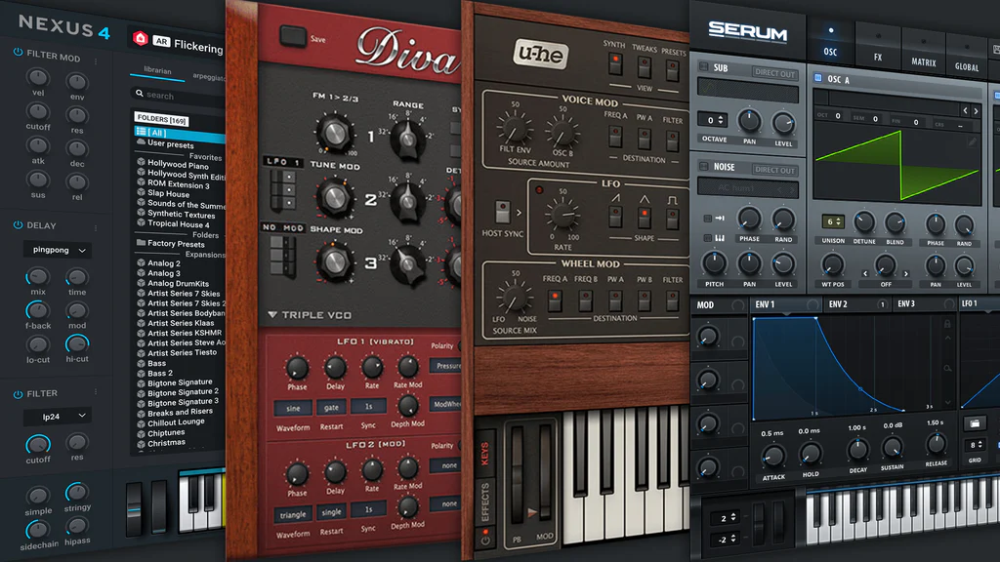

Desktop • VST

DAW plugin
Bring SpectroDraw directly into your favorite DAW like Logic, Ableton, and FL Studio. Edit spectral content and create samples without leaving your DAW.
SpectroDraw’s interactive spectrogram lets you paint frequency content directly — perfect for sound designers, music makers, and audio tinkerers. Create sound effects, convert to midi, and more.
Use SpectroDraw’s tools (brush, rectangle, line, blur, amplifier, and image overlay) to craft textures and fx quickly.
Generate clean MIDIs from songs easily, powered by AI.
SpectroDraw is built to accelerate creative workflows, from rapid fx prototyping to sheet music creation. Export clean MIDI, download stems, or bring your spectral edits into a DAW via the upcoming VST.
Our mission is to make sound design as natural and creative as drawing on a canvas — turning audio editing into an intuitive, visual experience accessible to everyone. Paint frequencies, sculpt harmonics, and transform audio into creative ideas fast.
We believe spectral editing should be immediate and playful — for students learning audio concepts, sound designers prototyping effects, and producers exploring new textures. Accurate audio → MIDI, DAW-friendly exports, and platform parity are core goals.
Take your sound design further with SpectroDraw Pro, the next evolution of our interactive spectrogram editor. With precision brush controls and advanced spectral tools, you can literally paint any sound you can imagine, from engine sounds to cinematic effects.
| Feature | Basic | Pro |
|---|---|---|
| AI-powered MIDI Conversion | ✅ | ✅ |
| Adjustable Spectrogram Resolution | ✅ | ✅ |
| Spectrogram Painting Tools | ✅ | ✅ |
| Equalizer | ✅ | ✅ |
| Stereo Support | ❌ | ✅ |
| Undo History Timeline | ❌ | ✅ |
| Cloner Tool | ❌ | ✅ |
| Harmonics Modifier | ❌ | ✅ |
| Region Selection | ❌ | ✅ |
| Advanced Brush Texturing | ❌ | ✅ |
| Effect Automation | ❌ | ✅ |
SpectroDraw started as a web app — but soon, you’ll be able to use it anywhere. We’re bringing it to your favorite DAWs as a VST plugin, and to iPhone and iPad with a powerful iOS app for on-the-go spectrogram editing.
Bring SpectroDraw directly into your favorite DAW like Logic, Ableton, and FL Studio. Edit spectral content and create samples without leaving your DAW.
Interactive spectrogram editing on the go — draw, edit, and export while capturing ideas on iPhone and iPad.
The SpectroDraw VST plugin brings the power of visual sound editing directly into your favorite DAW. Just like the web app, it will offer both free and premium versions — with exclusive DAW-integrated features such as enhanced sampling tools and advanced synthesis capabilities.
The plugin will support EQ automation, MIDI output, and advanced spectrogram-based modulation — giving producers a new dimension of control.
Formats: VST3 / AU / AAX
Compatibility: macOS, Windows
The upcoming SpectroDraw iOS app brings the full power of spectral editing to your pocket. Ideal for live spectral analysis, audio quality improvement, and sound effect creation.
Designed with touch-first precision, the iOS version includes gesture-based brushes, spectral zooming, and live mic analysis.
Devices: iPhone, iPad
Sync: iCloud / SpectroCloud

I have been making beats, remixes, EDM, and phonk since 2020. One thing I've always wanted is a tool that makes audio editing less complicated and more intuitive. As a creator, I know how overwhelming traditional DAWs and audio editors can be, especially when you just want to experiment, remix, or shape sounds quickly. That's why I made SpectroDraw, which can let you interact with audio visually and creatively, making the process of editing, remixing, and designing music much more accessible and fun for everyone.